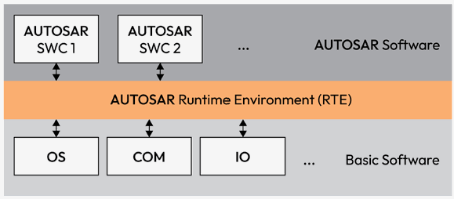
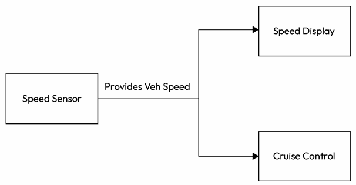
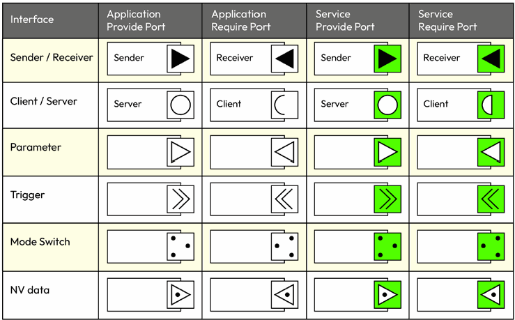
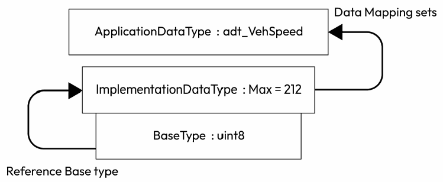
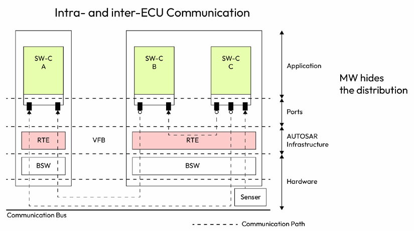
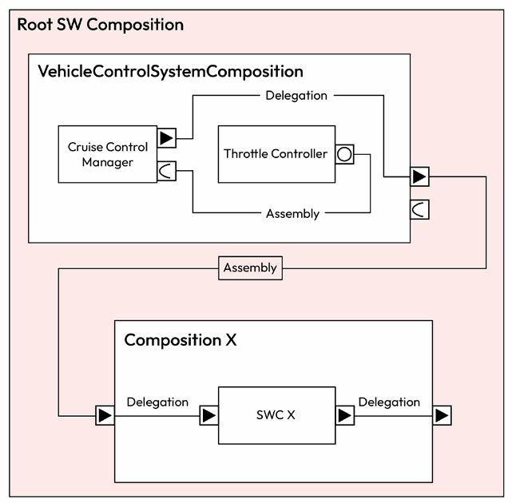
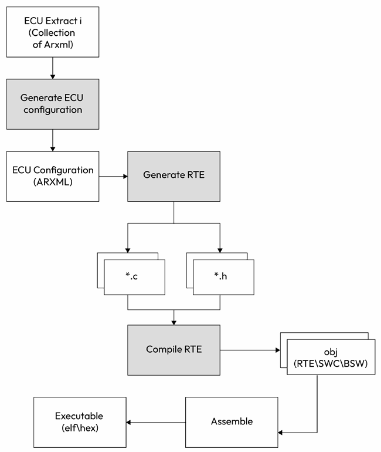

第4章 使用软件组件与 RTE
AUTOSAR Fundamentals and Applications — Hossam Soffar 著 | AI 辅助翻译
理解 SWC
如第2章所述，在 AUTOSAR 标准中，SWC指的是嵌入式汽车系统中具有特定功能的封装软件单元。AUTOSAR 软件组件被设计为独立、可重用且可在车辆不同电子控制单元（ECU）之间移植。这些 SWC 由一组运行实体（即代码函数）组成，这些实体由特定事件激活或调度，并通过明确定义的接口与系统交互。
下图展示了 SWC 之间通过 RTE 进行的交互和数据交换。请注意 SWC 位于 RTE 之上，RTE 负责管理它们之间的数据和控制交换：

图 4.1 – AUTOSAR 中的 SWC
AUTOSAR SWC 的特性如下：
- 与 AUTOSAR RTE 连接的能力至关重要。这种连接使它们能够与其他 SWC 以及 BSW 层中的 SWC 通信。这带来了多重好处，如软件重用、组件在 ECU 间改进了可移植性，以及更高效和经济的资源利用。
- AUTOSAR SWC 也是可扩展的。它们可以形成 AUTOSAR 组合（composition），这是一种特殊的 SWC 类型，允许将具有相似功能的 SWC 分组。这些组合作为系统抽象层，处理复杂性并增强软件应用逻辑表示设计的可扩展性。
- AUTOSAR SWC 提供了一种模块化、可扩展且高效的汽车软件开发方法。它们对复杂汽车系统的平滑运行起着至关重要的作用，其适应性和可重用性使它们成为不断发展的汽车软件架构领域中的宝贵资源。
由于组件可以无缝通信，相同的软件模块可以在不同项目和平台之间重用，减少了开发时间和工作投入。为了更好地理解 SWC，让我们看一个示例。
示例——节气门控制器
考虑汽车发动机管理系统中的节气门控制组件。该组件可能负责根据驾驶员加速踏板、发动机控制单元或巡航控制系统的输入来控制节气阀的位置。节气门控制 SWC 可能包含以下多个函数：
- calculateThrottlePosition()：接收加速踏板传感器的输入并计算所需的节气门位置。
- actuateThrottle()：接收所需的节气门位置并相应控制物理节气阀。
以下是这些函数在 C 代码中的简化示例：
void calculateThrottlePosition(AccelerationPedalPosition position) {
// Algorithm to calculate throttle position based on pedal position
...
}
void actuateThrottle(ThrottlePosition position) {
// Control signal sent to throttle actuator based on calculated position
...
}在此示例中，输入和输出将通过 SWC 定义的接口进行传递，使其能够与其他组件（如传感器 SWC（用于加速踏板传感器输入）和执行器 SWC（用于控制节气门执行器））进行交互。图 4.2 展示了这种交互的简化示例：

图 4.2 – 节气门控制 SWC 交互
AUTOSAR 创作工具（authoring tool）将用于创建这些组件、运行实体及其接口的描述，通常使用标准化的 XML 格式——AUTOSAR XML（ARXML），然后生成胶水代码或封装层，用于将这些组件集成到整体系统（ECU）中。我们将在后面探索 SWC 的构建块时进一步讨论。
现在我们已经理解了 SWC 能做什么。可能会产生一个问题：它如何集成到 AUTOSAR 软件中？此外，我们可能想知道这些 SWC 是如何组织的，它们如何通信，以及它们如何在模型中表示。首先，让我们深入了解各种类型的 SWC，然后弄清楚如何对它们进行建模并在 AUTOSAR 中实现。
AUTOSAR SWC 的类型
在本节中，我们将深入探讨构成 AUTOSAR 框架基石的一系列基本 SWC，解释它们在复杂架构中的独特角色和交互：
- Application SWC：代表一个不可分割的软件组件，执行应用的部分或全部功能。限定在单个 ECU 内，该组件构成 AUTOSAR 应用的基本构建块。
- Parameter SWC：主要用于从 ECU 访问标定参数并向其他 SWC 提供标定参数。此组件不包含内部行为，通过特定类型的接口向 SWC 提供参数。
- Service SWC：提供与其他 BSW 模块直接通信的标准接口，例如来自 COMM 模块的管理通信通道状态的服务。
- 复杂设备驱动（CDD）：泛化 ECU 抽象组件，可与 BSW 模块通信。如果 AUTOSAR 的 BSW 架构无法实现某个复杂应用，则可以使用复杂设备驱动组件在 AUTOSAR ECU 中实现这种非 AUTOSAR 定义的功能，从而扩展功能。
- NVBlock SWC：管理 ECU 内的非易失性存储器。它确保标定参数等重要数据在电源周期中持久保存，通过提供跨重启存活的数据读写接口来增强系统可靠性。
接下来，我们的下一个重点是 AUTOSAR 中设计软件组件的过程。接下来我们将熟悉 SWC 的元素。
SWC 的元素
AUTOSAR SWC 是高度结构化的实体，包含几个基本元素，如图 4.3 所示：

图 4.3 – SWC 的内部结构
让我们详细了解这些元素：
端口（Ports）
在 AUTOSAR 中，端口是 SWC 与外部世界之间的明确定义的交互点。它以标准化方式促进数据交换。AUTOSAR 中有两种类型的端口：
- 提供端口（PPorts）：作为 SWC 的输出通道。数据由组件生成并通过 PPort 发送给其他 SWC 或 BSW 层。PPort 就像一个服务台，为其他组件或用户提供特定服务。例如，温度传感器 SWC 可能有一个提供端口，用于报告当前发动机温度。
- 需求端口（RPorts）：作为 SWC 的输入通道。组件期望通过 RPort 从其他组件或 BSW 接收数据。它指定了组件需要但不自行实现的操作或函数。在服务提供者的类比中，需求端口就像请求特定服务的客户。例如，发动机控制 SWC 可能有一个需要发动机温度的需求端口，它将连接到温度传感器 SWC 的提供端口以获取此信息。
接口（Interfaces）
这些建立了 SWC 之间的通信协议，使它们能够平滑交互。AUTOSAR 提供了多种通信接口。然而，在当前的范围内，我们将重点讨论两种最常用的通信接口类别：
发送方-接收方（Sender-Receiver）接口：这是一种通信模型，其中一个 SWC（发送方）将数据发送给一个或多个 SWC（接收方）。这种通信是单向的，意味着数据仅从发送方流向接收方。其表示方式如下：

图 4.4 – 发送方-接收方接口符号
考虑如图 4.5 所示的示例，其中车辆控制系统中有三个 SWC：
- 速度传感器 SWC（发送方）：负责检测和记录车辆当前速度。测得的速度数据是系统中其他组件出于不同目的所需的关键信息。速度传感器 SWC（发送方）通过发送方-接收方接口将速度数据发送给速度显示 SWC 和巡航控制 SWC（接收方）。
- 速度显示 SWC（接收方）：速度显示 SWC 使用这些数据更新车辆仪表盘上的速度表读数，使驾驶员能够看到车辆当前速度。
- 巡航控制 SWC（接收方）：与此同时，巡航控制 SWC 使用这些数据根据驾驶员的设置维持或调整车速。例如，如果车辆速度低于设定速度，巡航控制 SWC 可能指示发动机控制系统增加加速。

图 4.5 – 发送方-接收方示例
在探索了发送方-接收方接口之后，让我们来探讨 AUTOSAR 中的客户端-服务器通信模型：
客户端-服务器（Client-Server）接口：它基于请求-响应模型促进 SWC 之间的通信。在此模型中，一个 SWC（客户端）向另一个 SWC（服务器）请求特定服务，然后服务器通过执行该服务并向客户端发回响应来作出回应。这是一种双向接口，因为通信在两个方向上进行——从客户端到服务器以及从服务器返回到客户端。图 4.6 展示了客户端-服务器接口在 AUTOSAR 模型中的表示方式：
图 4.6 – 客户端-服务器接口符号
例如，让我们考虑一个车辆控制系统，其中包含两个 SWC：
- Climate Control SWC（客户端）
- Air Conditioning System SWC（服务器）
Climate Control SWC 管理车辆内部气候，包括温度、湿度和气流。为此，它与车辆中的其他系统通信，在本例中为 Air Conditioning System SWC。
以下是在此上下文中客户端-服务器接口的工作方式：
- 用户输入：驾驶员在气候控制面板上调整期望温度。
- 气候分析：Climate Control SWC 接收用户输入和传感器数据。根据期望温度与当前温度（以及可能的湿度）之间的差异，Climate Control SWC 确定必要的调整。
- 客户端请求：Climate Control SWC 通过其 RPort 发送请求，调用 Air Conditioning System SWC（服务器）上的特定操作。该操作可以命名为
SetTargetTemperature，并包含期望温度值等参数。 - 服务器操作：Air Conditioning System SWC 接收请求并使用提供的参数执行
SetTargetTemperature函数。 - AC 系统控制：基于接收到的目标温度，Air Conditioning System SWC 激活各种执行器（如压缩机和风扇）以调整气流并达到期望温度。
在此示例中，AUTOSAR 框架内的客户端-服务器接口展示了不同 SWC 如何清晰高效地进行交互。这使系统能够精确响应外部刺激并执行所需功能，确保车辆内的协调性能。
AUTOSAR 中还使用其他类型的接口，如下图所示：

图 4.7 – AUTOSAR 接口列表
运行实体（Runnable Entities）
这些封装了软件组件需要执行的独立功能。每个运行实体对应组件的一个特定任务或操作，如处理输入、计算输出、管理内部数据或执行特定算法。我们可以认为运行实体就是代码函数的实现。
内部行为（Internal Behavior）
AUTOSAR SWC 的内部行为作为其内部运作的蓝图，详细描述了称为运行实体的基本构建块、数据访问（定义运行实体如何通过端口和接口消费或使用数据）以及触发机制（根据数据变化、基于时间的事件或事件驱动触发器启动运行实体），从而全面展现了 SWC 内部如何运作。
这些元素共同确保 AUTOSAR SWC 是可扩展、可重用且可维护的实体。
现在你已经掌握了 SWC 的基本概念，以及它们的不同类型和元素。此外，你还了解到 SWC 本质上是响应事件而激活的不同函数（运行实体）的集合。接下来，让我们探索可以在这些 SWC 中使用的各种数据类型。
探索 AUTOSAR 数据类型
AUTOSAR 标准概述了一种处理 AUTOSAR 数据类型的方法，其中基础数据类型与应用数据类型和实现数据类型相关联。这种方法允许区分应用层面的物理属性（如物理值范围、数据结构和物理含义）与实现层面的属性（如存储整数的最小值和最大值以及原始类型规范，如整数、布尔或实数）。
在处理 SWC 时理解这种区别至关重要，因为它确保数据不仅在功能上正确，而且在技术上也是健全的。这就像确保拼图碎片完美契合，无论是在预期用途还是技术兼容性方面。
以下简要说明每种数据类型代表的含义：
- 应用数据类型（Application Data Types）：在 AUTOSAR 中，这些以平台无关的方式定义，意味着它们不绑定到特定的编程语言或硬件平台。它们捕获应用领域中数据的物理属性、语义和行为。这包括有效值范围、测量单位、数据结构（如记录或数组）以及任何相关的语义约束等信息。
应用数据类型的目的是在 AUTOSAR 系统中提供标准化且可移植的数据表示。通过将应用级属性与实现级细节分离，应用数据类型使 SWC 能够独立于特定硬件或软件平台进行开发。这促进了 AUTOSAR 生态系统内的模块化、可重用性和互操作性。
- 实现数据类型（Implementation Data Types）：在 AUTOSAR 中，这些与底层编程语言和硬件架构紧密相关。它们用于生成将在目标平台上执行的实际代码，考虑到内存分配、位排序和对齐需求等方面。实现数据类型的示例包括：
- uint32：表示 32 位无符号整数，通常用于存储和操作范围在 0 到 4,294,967,295 的非负整数值。
- float32：表示 32 位单精度浮点数，用于执行具有一定精度的小数值计算。
- 基础类型（Base Types）：在编程中，基础数据类型（也称为原始数据类型）是编程语言提供的基本数据类型。基础数据类型不由其他数据类型组合而成，代表计算机硬件可以直接操作的基本值。基础数据类型包含数据类型特定于硬件的特征，如其大小和编码。它们作为构建实现数据类型的基础。多个实现数据类型可以引用单一基础类型。
在下图中，我们可以看到数据类型如何关联。例如，在应用层面有一个名为 adt_VehSpeed 的数据类型，值得注意的是该数据类型的最大值设定为 212。这说明了 AUTOSAR 中的应用数据类型如何携带对定义数据如何在 SWC 中使用和处理至关重要的特定属性和约束：

图 4.8 – 数据类型及其关系
应用数据类型就像标签，告诉软件如何处理特定信息。它们定义诸如有效值范围、复杂数据的结构以及数据在应用上下文中的含义。以 adt_VehSpeed 为例，它似乎与车辆速度相关，了解其最大值对于确保软件组件在处理此类数据时正确运行至关重要。
在下一节中，我们将探讨如何对 SWC 进行建模。
建模 SWC
称为创作工具（authoring tools）的专用软件应用程序简化了 SWC 和汽车软件框架其他方面的创建和构建。这些工具支持工程师和开发人员塑造、定制和监督各种 AUTOSAR 元素，包括 SWC 和通信接口。由于 Vector DaVinci Configurator 和 SystemDesk 等工具不免费提供，让我们转而探索 ARXML 输出。这将使我们对使用这些工具时可以期待什么有宝贵的了解。
什么是 AUTOSAR 创作工具？
AUTOSAR 创作工具是专用的软件应用程序，旨在解释、管理和创建 AUTOSAR 描述，这些描述是 SWC 功能和定义的组成部分。这些描述突出显示了 SWC 的功能、系统需求、资源需求、实现细节和系统约束，以及 ECU 资源和配置的详细信息。
SWC 由两个主要部分组成：详细说明其基础设施设置的全面描述，以及包含其功能的实现（通常用 C 代码编写）。在创建 SWC 之前，必须定义其组件类型。此定义概述了其固定特性，如端口名称、通信特性、接口类型及其特定属性，以及 SWC 的行为。
AUTOSAR 元素以标准化的 XML 文件格式（ARXML 格式）相互交互，该格式可能根据 AUTOSAR 发布版本略有不同。因此，AUTOSAR 创作工具必须能够根据 ARXML Schema 版本解释、创建或修改 ARXML 描述。
让我们将其作为建模 SWC 的练习。我们将描述设计一个名为 TemperatureHandler 的 AUTOSAR 软件组件的过程，该组件处理温度数据。在此示例中，它使用发送方-接收方接口传播温度数据，并使用客户端-服务器接口从服务器（提供者）查询温度值（操作）。ARXML 文件中该软件组件的定义如下：
<AUTOSAR xmlns="http://autosar.org/schema/r4.0" xmlns:xsi="http://www.w3.org/2001/XMLSchema-instance">
<AR-PACKAGES>
<AR-PACKAGE>
<SHORT-NAME>TemperatureControlPackage</SHORT-NAME>
<ELEMENTS>
<SW-COMPONENT-PROTOTYPE>
<SHORT-NAME>TemperatureHandler</SHORT-NAME>
<PORTS>
<P-PORT-PROTOTYPE SHORT-NAME="TempOutputPort">
<PROVIDED-INTERFACE-TREF DEST="SENDER-RECEIVER-INTERFACE">/TemperatureOutputInterface</PROVIDED-INTERFACE-TREF>
</P-PORT-PROTOTYPE>
<R-PORT-PROTOTYPE SHORT-NAME="TempInputPort">
<REQUIRED-INTERFACE-TREF DEST="CLIENT-SERVER-INTERFACE">/TemperatureSetInterface</REQUIRED-INTERFACE-TREF>
</R-PORT-PROTOTYPE>
</PORTS>
</SW-COMPONENT-PROTOTYPE>
<INTERNAL-BEHAVIORS>
<SWC-INTERNAL-BEHAVIOR>
<RUNNABLES>
<RUNNABLE-ENTITY>
<SHORT-NAME>TemperatureHandler_MainFunction</SHORT-NAME>
</RUNNABLE-ENTITY>
</RUNNABLES>
</SWC-INTERNAL-BEHAVIOR>
</INTERNAL-BEHAVIORS>
</ELEMENTS>
</AR-PACKAGE>
</AR-PACKAGES>
</AUTOSAR>在上述代码片段中，TemperatureHandler 软件组件已定义了两个端口。发送方-接收方端口命名为 TempOutputPort，客户端-服务器端口命名为 TempInputPort。
该软件组件的代码可能如下所示：
#include "Rte_TemperatureHandler.h"
float currentTemperature = 0.0;
void TemperatureHandler_MainFunction(void)
{
Rte_ResultType res = Rte_Call_TempInputPort_GetTemperature(¤tTemperature, &isupdated);
if(isupdated == TRUE) {
/* Propagate the new temperature */
Rte_Write_TempOutputPort_Temperature(¤tTemperature);
}
}在此代码中，有一个周期性运行的主函数（TemperatureHandler_MainFunction）。它检查是否有新的温度被设置。如果有，则更新温度并传播新的温度数据。
以下片段是包含 API 定义的生成头文件：
#include "Rte_Type.h"
/* RTE API prototypes */
Std_ReturnType Rte_Call_TempInputPort_GetTemperature(float* temperature, boolean *isupdated);
Std_ReturnType Rte_Write_TempOutputPort_Temperature(const float* temperature);在这段 RTE 代码中，你可以看到软件组件使用的 RTE API 函数原型。Rte_Call_TempInputPort_GetTemperature 函数用于检查是否有新的温度值被更新。isupdated 标志表示新的温度值已被更新，而 Rte_Write_TempOutputPort_Temperature 用于将新的温度数据传播给其他使用者。
至此，我们对 SWC 的设计和实现如何工作有了更清晰的认识。现在让我们来研究不同 SWC 之间如何交互。
SWC 之间的通信
虚拟功能总线（VFB）实现 SWC 之间的通信。它提供了一个抽象层，将应用程序与基础设施隔离开来。在运行时，VFB 通常由 RTE 体现，为 AUTOSAR 系统中的每个 ECU 单独生成。VFB 内的通信通过专用端口进行，需要将应用软件的通信接口映射到这些端口。VFB 处理单个 ECU 内部以及多个 ECU 之间的通信，实现跨系统的无缝数据和信息交换：

图 4.9 – ECU 间/ECU 内通信
如上图所示，SWC 之间的通信可以通过两种方式进行：ECU 间（inter-ECU）和 ECU 内（intra-ECU）。两种类型的通信都通过 AUTOSAR RTE 进行管理。让我们仔细看看：
- ECU 间通信，如 ECU I 与 ECU II 之间的通信，通过 RTE 及其下方经过 BSW 模块进行。BSW 模块处理各种功能，包括内存交互、诊断和（如有必要的）通信服务，以促进 ECU 间通信。
- ECU 内通信指的是单个 ECU 内部的通信，如 SWC B 与 SWC C 之间。ECU 内通信完全通过 RTE 处理。图中显示映射到单个 ECU 的 SWC 使用 ECU 内通信方法。
应用层（Application SWC）通过 RTE 与较低层以及彼此之间进行通信。每当一个 SWC 需要服务时，RTE 将这些请求映射到相应的 BSW 服务提供者。
现在你理解了 SWC 通信如何工作，重要的是要了解一种称为组合（composition）的 SWC 分组方式，它有助于管理复杂性、逻辑组织系统并增强可扩展性。
组合简介
SWC 和组合是 AUTOSAR 架构中的重要构造，各自服务于独特的目的。它们提供不同级别的抽象和组织方法来处理汽车软件的复杂生态系统。
我们在本章前面已经探讨了 SWC；现在来理解组合。组合是一种特殊类型的 SWC，本身不包含任何实现。相反，它们作为容器来聚合相关的 SWC，有助于管理复杂性和构建更大的系统。
例如，你可能有一个 Engine System（发动机系统） 组合，将 Engine Control（发动机控制）、Fuel Sensor（燃油传感器）、Temperature Sensor（温度传感器） 和 Throttle Position（节气门位置） SWC 分组在一起。组合本身不执行任何功能，但聚合了这些相关组件，提高了整体系统的可管理性。创建组合具有以下明显优势：
- 管理复杂性：随着系统中 SWC 数量的增长，管理它们可能变得越来越复杂。组合提供了一种将相关 SWC 分组在一起的方法，简化了架构。
- 逻辑组织：组合通过将相关功能分组来帮助逻辑组织系统，增强系统结构和功能的可理解性。
- 可扩展性：随着系统扩展或新功能的添加，新的 SWC 可以通过添加到适当的组合中轻松集成。
总之，SWC 和组合的引入对于管理复杂性和提高汽车软件系统的开发效率具有重要意义。现在我们已经涵盖了 SWC 及其组合，是时候探索如何通过端口在这些实体之间传递信息了。这强调了理解各种连接器类型的重要性，接下来我们将探讨这一点。
连接器类型
连接器作为 SWC 或软件组合的 PPort 和 RPort 之间数据流的表示。它们建立了数据交换和协调所需的链接。特别是，Assembly 连接器和 Delegation 连接器是 AUTOSAR 架构中的基本组件，在实现 SWC 之间的通信和管理信息流方面发挥着关键作用。让我们详细了解：
- Assembly 连接器：Assembly 连接器在一个 SWC 的提供接口与另一个 SWC 的需求接口之间建立直接链接。这种连接使连接组件之间能够进行无缝通信和信息交换。
例如，考虑一个涉及车辆巡航控制系统的示例。该系统包含两个 SWC：Cruise Control Manager（巡航控制管理器） 和 Throttle Controller（节气门控制器）。Cruise Control Manager SWC 提供一个输出期望速度的提供接口，而 Throttle Controller SWC 需要此期望速度信息来控制节气门。为了在这两个组件之间建立通信，使用了一个 Assembly 连接器。它将 Cruise Control Manager SWC 的提供接口连接到 Throttle Controller SWC 的需求接口，使前者能够直接将期望速度信息传输给后者。这种连接确保了巡航控制系统内的有效协调和控制。 - Delegation 连接器：Delegation 连接器在组合内部使用，用于在内部 SWC 接口与组合本身的接口之间建立连接。它使组合能够将需求或提供接口委托给其内部组件之一。
扩展前面的示例，让我们引入一个名为 Vehicle Control System（车辆控制系统） 的组合，它包含 Cruise Control Manager 和 Throttle Controller SWC。在此场景中，我们可能希望 Vehicle Control System 组合向外部环境提供一个提供当前速度信息的接口。为实现这一点，我们将使用 Delegation 连接器将负责输出当前速度的 Vehicle Control System 接口连接到负责提供此信息的 Cruise Control Manager SWC 的接口。Delegation 连接器使 Vehicle Control System 组合能够将提供当前速度接口的任务委托给 Cruise Control Manager SWC，从而可以通过组合接口访问此功能。

图 4.10 – 组合与 SWC
Assembly 连接器和 Delegation 连接器之间的一些主要区别如下：
- Assembly 连接器连接提供端口和接收端口。Delegation 连接器连接相同类型的端口——提供端口到提供端口，或接收端口到接收端口。
- Assembly 连接器促进数据或信号在连接的 SWC 之间直接流动。相比之下，Delegation 连接器旨在抽象内部 SWC 的功能并将其作为组合接口的一部分公开。它允许组合中介或提供特定功能，将实现细节委托给内部组件。
在观察了 SWC 之间的各种通信类型后，现在有必要更深入地探讨 RTE 层的功能和意义。
理解 RTE 的重要性
RTE 和 VFB 的协作努力使底层 BSW 层得以高效利用，将 SWC 与特定实现解耦。这种分离培养了灵活性和可移植性，使 SWC 能够无缝集成到不同的汽车系统中，同时受益于标准化的 AUTOSAR 框架。
图 4.11 展示了 RTE 如何作为应用层和 BSW 层之间的中间件：

图 4.11 – RTE 作为中间层
RTE 层的主要特性如下：
- RTE 作为中间件：RTE 可以视为一种为 SWC 提供标准化接口的中间件形式。它抽象了低级操作的复杂性，如数据交换机制、任务调度和网络管理，为应用层呈现简化的接口。这使得应用开发人员能够专注于核心业务逻辑，同时最大限度地减少对底层硬件或系统级任务的担忧。
- 通信管理：RTE 处理 ECU 间（不同 ECU 之间）和 ECU 内（同一 ECU 内部）的通信。它高效地管理信息在发送方和接收方组件之间的路由，无论它们位于同一还是不同的 ECU 内。
- 数据映射和转换：RTE 负责必要的数据映射和转换。当数据在组件之间交换时，通常需要从一种格式转换为另一种格式。这可能涉及更改数据类型或编码方案。
- 安全与安保：由于 RTE 处于中心角色，它对维护系统完整性至关重要。它管理访问权限，确保只有授权的组件可以彼此通信。此外，RTE 协助识别或减轻特定故障，如时序错误和通信失败。它使用错误处理和监控等机制来检测异常，并纠正它们或将系统置于安全状态。
- SWC–BSW 交互：RTE 桥接应用层（SWC）和 BSW 层之间的鸿沟。SWC 通过 RTE 提供的标准化 API 与 BSW 模块（如 OS 和通信服务）进行交互。
- 事件处理：RTE 管理 SWC 功能的执行。它可以基于预配置的事件（如接收数据或信号）触发 SWC 的特定部分（运行实体）。这确保了任务的高效执行。
总体而言，RTE 是 AUTOSAR 架构中的关键组件，执行对应用功能以及系统和软件设计效率至关重要的基本操作。这为理解 RTE 层如何在系统中实例化奠定了基础。本质上，RTE 作为绑定层，确保 AUTOSAR 框架内各个 SWC 之间的无缝通信和交互。
在掌握了 RTE 的基本操作后，下一个问题是这一层是如何产生的。
RTE 的生成
在 AUTOSAR 系统中创建 RTE 是一个结构化的过程，将软件架构转换为 ECU 的功能框架。以下是其运作方式的一般概述，包括一个例子以及一些关键输出文件的详细信息。
RTE 的生成利用各种工具和输入文件，将 AUTOSAR VFB 规范转换为在 ECU 上运行的操作代码。此过程确保所有 SWC 能够仅通过 AUTOSAR 定义的接口彼此交互以及与操作系统（OS）和通信服务等基础软件模块交互。
例如，RTE 生成的输入如下：
- SWC 描述：包括 SWC 的端口（数据接口）、接口（如客户端-服务器的通信机制）、运行实体（功能单元）和事件（执行触发器）的信息。
- ECU 配置：详细说明目标 ECU 上可用的 BSW 模块，如 OS、通信栈以及 BSW 提供的任何服务。
- 工具链：指用于 RTE 生成的软件工具。常用选项包括来自 AUTOSAR 或第三方供应商的工具，如 Vector DaVinci Configurator。
RTE 生成的阶段
AUTOSAR 中 RTE 的生成是一个两阶段过程，将 SWC 的高层配置转换为管理目标 ECU 上通信和执行的特定代码。这些阶段共同作用，确保为你的系统生成量身定制的 RTE：
- RTE 契约阶段：在此初始阶段，首先定义 SWC 与 RTE 之间的交互。此阶段可用的关于组件能力和通信需求的信息有限。此阶段的主要输出是应用头文件，它在 SWC 和 RTE 之间建立了一个"契约"。该契约指定了组件将如何与 RTE 交互，并概述了必要的接口和数据类型。
- RTE 生成阶段：在契约阶段之后，RTE 生成阶段在所有关于 SWC、它们在 ECU 上的部署以及它们的通信链接的相关信息最终确定后开始。在此阶段，生成实际的 RTE 代码。此代码集成了所有指定的交互，并确保跨 SWC 以及 SWC 与 BSW 模块之间的通信遵循定义的 AUTOSAR 标准。
RTE 不是手工编写的，而是根据项目的特定配置自动生成的。以下是处理此过程的工具介绍。
RTE 生成工具
使用各种专用工具来支持 RTE 生成过程。这些工具对于配置、集成和生成 SWC 及 RTE 至关重要。它们协助建立映射、定义配置，并最终生成将在 ECU 中实现的 RTE 代码。以下是工具链选项：
- Vector DaVinci Configurator
- ETAS RTA-RTE
- EB tresos
- KPIT K-SAR
所有这些工具都是强大的 RTE 生成器，以 ARXML 文件为输入并生成 RTE 代码，确保生成的代码符合 AUTOSAR 标准。
选择正确的工具
最佳工具的选择取决于你的具体需求和偏好。以下是一些需要考虑的因素：
- 项目需求：某些工具可能针对特定的 ECU 架构，或为复杂的通信场景提供高级功能
- 供应商支持：考虑工具供应商提供的支持和培训水平
- 与现有工作流程的集成：如果你已经在使用其他开发工具，请确保与所选的 RTE 生成工具兼容且平滑集成
- 成本和许可：AUTOSAR 和第三方工具可能具有不同的许可模式和定价结构
选择好合适的工具后，现在让我们回顾一下 RTE 输出将如何生成。请注意，所有供应商将生成类似的文件，因为生成的文件结构和内容主要由 AUTOSAR 标准定义。尽管在实现上可能存在细微差异，但这些文件的相似性大于差异性。
RTE 生成的输出
RTE 生成过程的输出包括几个关键文件，这些文件对于软件在 ECU 内正确运行至关重要：
- Rte.c：包含 RTE 的实现代码，包括必要的函数定义、事件处理和数据转换。
- Rte.h：设置不需要为每个 ECU 生成的固定元素，因此不会被 RTE 生成器软件重复生成。然而，此文件可以根据我们的应用需求进行必要的自定义。
Std_Types.h文件包含在此文件中。 - Rte_<swc_name>.h：此文件是为每个 SWC 生成的头文件，特定于该 SWC。它定义了 SWC 与 RTE 之间的接口，促进通信和服务访问。此文件包含了相关 SWC 中使用的 RTE API 函数原型、数据结构和运行实体的函数原型。
- Rte_Type.h：此文件填充了基于 SWC 设置过程中配置的实现数据类型的 RTE 特定类型声明。它还包含对 RTE API 有用的 AUTOSAR 数据类型。
Rte.h文件包含在此文件中。 - Rte_<swc_name>_Type.h：此文件通常称为应用类型头文件，包含与应用相关的常量，如 SWC 中使用的范围值或枚举值。SWC 名称始终包含在文件名中作为分隔符。
Rte_Type.h文件包含在此文件中。
根据项目的具体需求和配置，可能还会生成其他文件，如 RTE 配置文件或特定 SWC 或模块的额外头文件。
图 4.12 展示了 RTE 生成步骤与 SWC 和 RTE 生成器软件的关系：

图 4.12 – RTE 生成输出
以下是此过程的概述：
- 提取 ECU 特定信息：过程：从系统配置描述中提取 ECU 特定信息。输出：此信息用于生成单个 ECU 配置。
- 生成 ECU 配置：过程：基于提取的信息生成 ECU 配置值。输出：ECU 配置值存储在 ARXML 文件中。
- 生成 RTE：过程：从 ECU 配置值生成 RTE。输出：此步骤产生 RTE 代码文件（.c 和 .h）。
- 编译 RTE：过程：编译生成的 RTE 代码。输出：RTE 目标文件（.obj）被编译。
- 编译 SWC 和 BSW：过程：编译 SWC 和 BSW。输出：SWC 目标文件和编译后的 BSW 目标文件（.obj）被编译。
- 生成可执行文件：过程：将编译后的 RTE、SWC 和 BSW 目标文件链接在一起以生成最终的可执行文件。输出：ECU 可执行文件（.elf/.hex/.bin 等）。
本章到此结束，在此我们尝试揭示了 SWC 与 RTE 之间复杂的关系。需要指出的是，由于这一主题非常广泛，超出了入门书籍的范围，我们无法涵盖所有复杂的细节。至此，我希望你已经理解了什么是 SWC、它们如何在 ECU 中集成、它们在组合中的相互作用，以及端口的重要性以及这些组件如何连接的方法。
本章小结
本章深入 AUTOSAR SWC 的世界及其在 AUTOSAR 框架中的关键角色。我们探索了 SWC 的结构、功能和关键组件，对驱动汽车 ECU 的元素建立了坚实基础。SWC 被介绍为封装、可重用的单元，专门执行 ECU 内特定功能。我们还深入理解了各种 SWC 类型，如 Application SWC 和复杂设备驱动 SWC。
我们的探索揭示了 SWC 如何使用端口进行通信和交互，实现服务和数据的顺畅交换。我们进一步研究了如何通过运行实体及其触发条件在组件内组织特定任务和操作。
此外，我们理解了 RTE 的重要角色及其特性，突出了它与 VFB 的关键连接。通过本章介绍的基本 SWC 构建块——端口、接口和内部行为——开发人员具备了概念化复杂系统的能力。
在下一章中，我们将探索事件和接口的设计与实现细节。我们将探讨 ARXML 模型的结构并研究这些接口的内部特征，为理解它们在汽车软件架构中的角色和功能提供更深层次的认识。
思考题
- 什么是软件组件？
- SWC 如何在 AUTOSAR 中建模？
- 内部行为描述了什么？
- 讨论 RTE 的功能和特性。
- 发送方-接收方接口和客户端-服务器接口有什么区别？
- 端口在 AUTOSAR 中意味着什么？
- 描述 RTE 的生成过程以及需要哪些输入。
第5章 设计与实现事件和接口
事件和接口的相互作用构成了系统通信和同步的主干。在本章中，我们旨在更深入地探讨软件组件（SWC）如何在汽车软件的构建块中封装多样功能，并利用事件和接口建立通信通道。基于第4章讨论的基础，我们将探索 SWC 内部通信的基本通道：端口、接口和事件。我们将揭示它们如何运作，研究它们的各种类型，以及它们在确保无缝数据流方面的作用，全面洞察它们的角色和功能。通过此过程，你将更深入地理解实现软件系统中高效可靠通信的机制。
我们将涵盖以下主要主题：
- 通信模型简介
- 理解 AUTOSAR 中的事件和接口